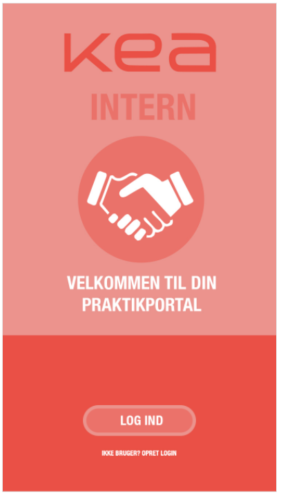
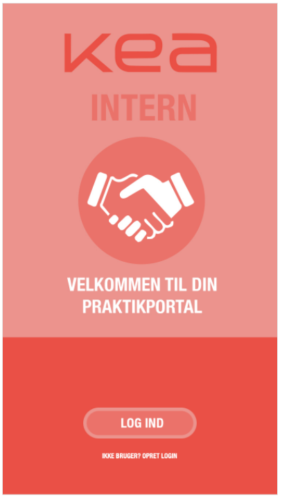
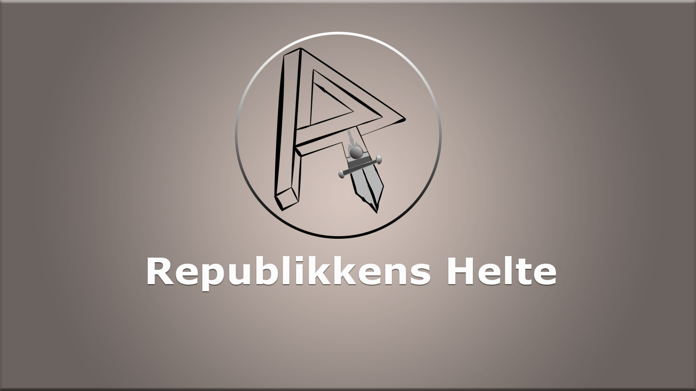

Som den første opgave under UX forløbet, udviklede jeg i samarbejde med min gruppe en prototype til en app, der har til hensigt at gøre praktiksøgning hurtigere og mere overskuelig.
Som den første opgave under UX forløbet, udviklede jeg i samarbejde med min gruppe en prototype til en app, der har til hensigt at gøre praktiksøgning hurtigere og mere overskuelig.
I casen for Republikken, gik vi i enb anden retning, ved at lave en prototype for en networking-app forklædt som et brugerdrevet fatasy rollespil.
